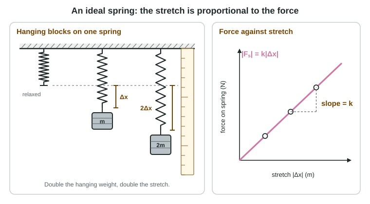

Hang a weight on a spring and it stretches. Hang twice the weight and it stretches twice as far. That simple pattern, discovered by Robert Hooke in the 1670s, makes springs the most useful force-measuring tool in a physics lab, and it returns again and again later in this course.
The spring force
A spring has a relaxed length, the length it has when nothing stretches or squeezes it. Pull its end out and the spring pulls back; push its end in and the spring pushes back. Either way, the spring force on the object at its end points back toward the relaxed length. A stretched spring pulls; a compressed spring pushes.
In this course springs are ideal: they have no mass, and their force follows Hooke's law exactly. Because an ideal spring is massless, it pulls (or pushes) with the same size of force at both ends, just as an ideal string has one tension.
Hooke's law

Fs = −kΔx
- Δx is the displacement of the spring's end from its relaxed position: how far it is stretched (or compressed), not the spring's total length.
- k is the spring constant, in newtons per meter (N/m). A stiff spring, like a car's suspension, has a large k; a soft spring, like one in a ballpoint pen, has a small k.
- The minus sign says the force points opposite to the displacement. If the end is pulled to +0.10 m, the force is negative, back toward the relaxed position.
For sizes alone, |Fs| = k|Δx|: the force is directly proportional to the stretch. Double the stretch, double the force; a third of the stretch, a third of the force.
Worked example 1. A cart on a frictionless track is held against a spring (k = 200 N/m), compressing it by 0.050 m. Find the spring force on the cart, taking the direction away from the wall as positive.
Principle: Hooke's law, Fs = −kΔx.
The end of the spring is pushed toward the wall, so Δx = −0.050 m.
Fs = −(200 N/m)(−0.050 m) = +10 N: 10 N away from the wall. The compressed spring pushes the cart outward. If the student lets go, a 0.40 kg cart's acceleration is 10 N ÷ 0.40 kg = 25 m/s² at first, and it shrinks as the spring relaxes.
Measuring a spring constant
The classic lab: hang masses from a spring and measure each stretch with a meterstick once the mass hangs at rest. At rest the net force is zero, so the spring's upward pull equals the weight: kΔx = mg. Plot spring force (mg) on the vertical axis against stretch on the horizontal axis. An ideal spring gives a straight line through the origin, and its slope is k.
Worked example 2. Hanging 0.100 kg stretches a spring 0.030 m; hanging 0.300 kg stretches it 0.090 m. Find k. Use g = 9.8 m/s².
Forces: 0.100 kg × 9.8 m/s² = 0.98 N and 0.300 kg × 9.8 m/s² = 2.94 N.
k = slope = ΔF ÷ Δx = (2.94 N − 0.98 N) ÷ (0.090 m − 0.030 m) = 1.96 N ÷ 0.060 m = 33 N/m (32.7 N/m).
Using two points far apart on the line, or a best-fit line through all the points, reduces the effect of measurement error in any one reading.
A spring scale works the same way: its spring stretches in proportion to the force on its hook, and the scale is marked in newtons. It measures the force on it, not the mass.
Reading the proportionality
| Change | Effect |
|---|---|
| Hanging weight × 2 (same spring) | stretch × 2 |
| Spring with 4 times the k (same weight) | stretch ÷ 4 |
| Stretch × 3 (same spring) | spring force × 3 |
| Same spring and weight, moved to another place in the room | no change |
Real springs obey Hooke's law only up to a limit; overstretch one and it stays bent. The exam keeps springs in their straight-line range unless it says otherwise.
Free-body diagrams with springs
A spring is an agent like a rope. For a block hanging at rest from a spring, draw two forces: Fs, spring on block, up, and Fg, Earth on block, down, equal in length. The ceiling does not touch the block, so it does not appear. For a cart pushed outward by a compressed spring, draw Fs, spring on cart, pointing away from the spring.
Common slips
Using the spring's total length for Δx. Forgetting that a compressed spring pushes. Converting centimeters too late (4.0 cm is 0.040 m). Dividing stretch by force and calling it k. Plotting mass rather than force against stretch and reading the slope as k: a mass-against-stretch slope is k/g.